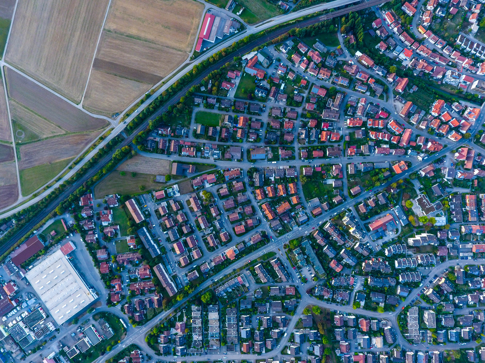

Conoce tu
Territorio
Catastro
Planifica el desarrollo urbano.
Localiza y registra inmuebles para la obtención de un valor catastral actualizado.
Planifica el desarrollo urbano.
Localiza y registra inmuebles para la obtención de un valor catastral actualizado.

Empadrona a cada contribuyente independientemente de su situación dominial (padrón local).
Emplea eficientemente datos de infraestructura y Servicios Públicos.
Analiza y elabora efectivamente modelos de desarrollo.

Visualiza información precisa y relevante a cerca de tu territorio, cuidadanos e infraestructura.
Las municipalidades declaradas como zona catastrada tienen un mayor desarrollo social y un fortalecimiento institucional.
Las municipalidades con zonas no catastradas tienen mayores problemas a la hora de planificar y estimar costos.
Puedes probar GEOS con un usuario demo.
Puedes ver nuestra actividad en las redes sociales.
O si lo prefieres, puedes leer un articulo con mas detalles.